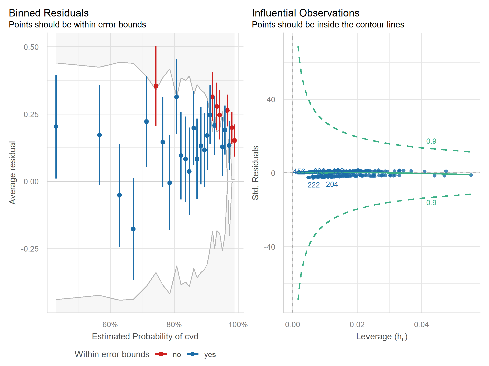
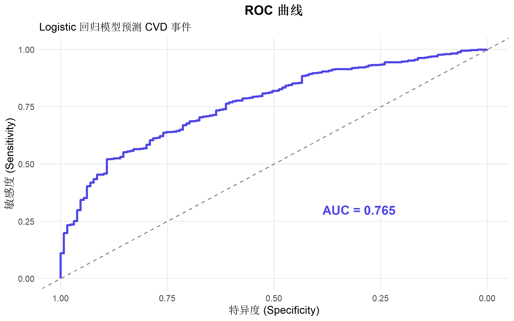
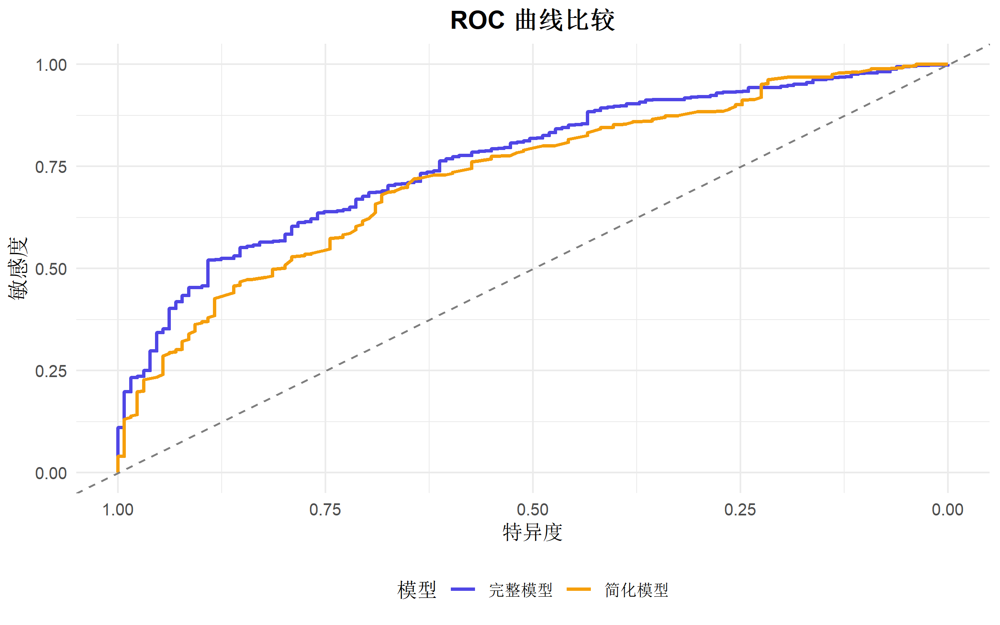
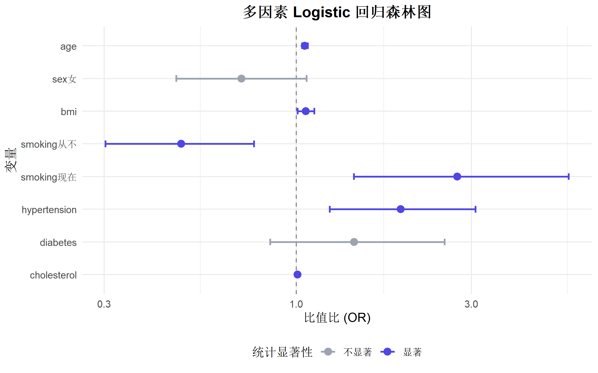
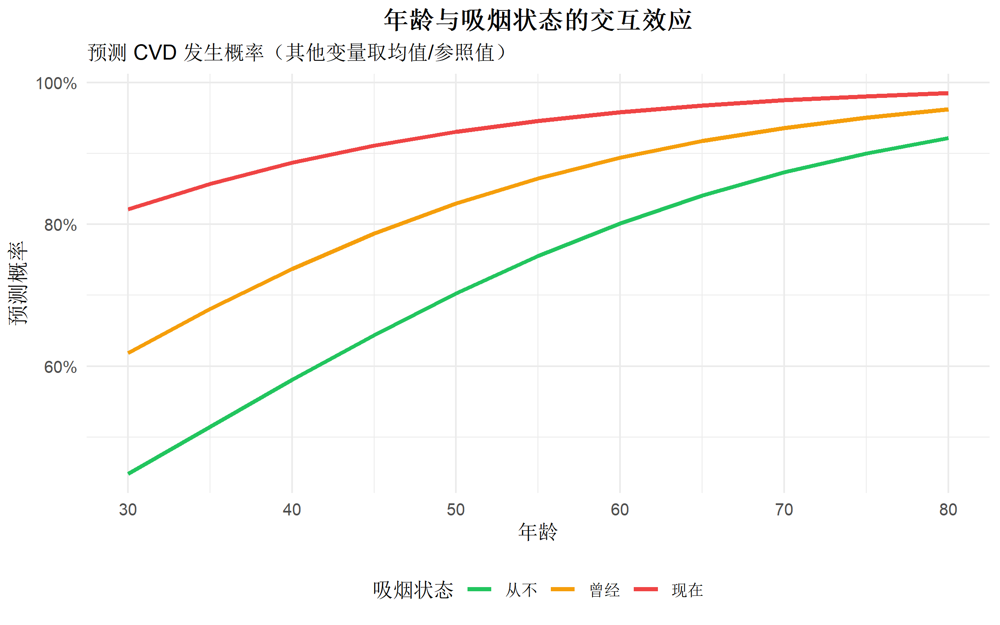
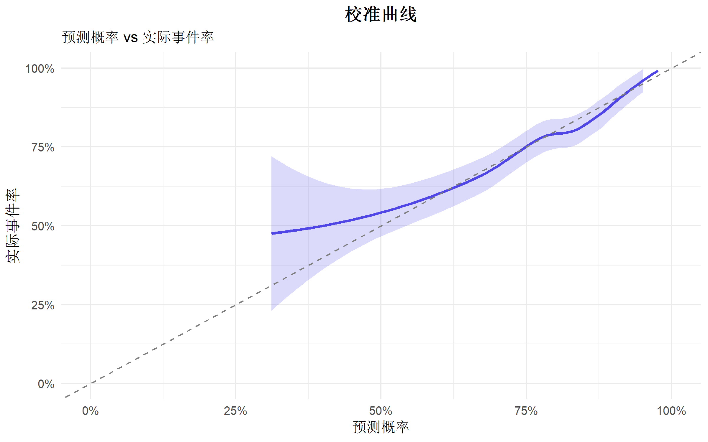

# 核心包
library(tidyverse) # 数据处理
library(broom) # 模型整理
library(gtsummary) # 结果表格
library(performance) # 模型诊断
library(see) # 可视化支持
library(pROC) # ROC 曲线
library(ResourceSelection) # Hosmer-Lemeshow 检验
library(car) # VIF 检验Logistic 回归完全指南
统计分析方法
基础回归
统计建模
Logistic回归
什么是 Logistic 回归？
Logistic 回归是一种用于分析二分类结局变量的广义线性模型。它通过 logit 变换将线性预测值映射到 (0, 1) 区间，估计事件发生的概率。
适用场景
| 场景 | 示例 |
|---|---|
| 疾病诊断 | 是否患病 (是/否) |
| 风险预测 | 是否发生不良事件 |
| 分类问题 | 客户是否流失 |
| 病例对照研究 | 暴露与疾病关联 |
核心公式
Logit 变换： \[\text{logit}(p) = \ln\left(\frac{p}{1-p}\right) = \beta_0 + \beta_1 X_1 + \beta_2 X_2 + \cdots\]
概率形式： \[P(Y=1|X) = \frac{e^{\beta_0 + \beta_1 X_1 + \cdots}}{1 + e^{\beta_0 + \beta_1 X_1 + \cdots}}\]
比值比 (OR)： \[OR = e^{\beta_i}\]
R 包安装与加载
数据准备
我们使用模拟的心血管疾病数据集：
# 模拟数据：心血管疾病风险
set.seed(2024)
n <- 800
cvd_data <- tibble(
id = 1:n,
age = round(rnorm(n, 55, 12)),
sex = factor(sample(c("男", "女"), n, replace = TRUE, prob = c(0.55, 0.45))),
bmi = round(rnorm(n, 25, 4), 1),
smoking = factor(sample(c("从不", "曾经", "现在"), n, replace = TRUE,
prob = c(0.4, 0.3, 0.3))),
hypertension = rbinom(n, 1, 0.35),
diabetes = rbinom(n, 1, 0.20),
cholesterol = round(rnorm(n, 200, 40))
) |>
mutate(
# 生成 CVD 事件（受多个因素影响）
logit_p = -6 +
0.05 * age +
0.4 * (sex == "男") +
0.08 * bmi +
0.6 * (smoking == "曾经") +
1.0 * (smoking == "现在") +
0.8 * hypertension +
0.7 * diabetes +
0.01 * cholesterol,
prob = plogis(logit_p),
cvd = rbinom(n, 1, prob)
) |>
select(-logit_p, -prob)
# 查看数据结构
glimpse(cvd_data)Rows: 800
Columns: 9
$ id <int> 1, 2, 3, 4, 5, 6, 7, 8, 9, 10, 11, 12, 13, 14, 15, 16, 17…
$ age <dbl> 67, 61, 54, 52, 69, 71, 61, 53, 40, 42, 35, 61, 65, 59, 1…
$ sex <fct> 男, 女, 男, 女, 女, 女, 男, 男, 男, 女, 女, 女, 男, 女, 男, 女, 女, 男, 女, …
$ bmi <dbl> 20.5, 28.1, 18.5, 29.2, 21.2, 23.2, 21.0, 25.4, 27.6, 27.…
$ smoking <fct> 曾经, 从不, 从不, 从不, 从不, 从不, 从不, 曾经, 从不, 现在, 从不, 曾经, 曾经, 现在, 曾…
$ hypertension <int> 0, 0, 1, 1, 0, 1, 0, 0, 0, 0, 1, 0, 0, 0, 0, 1, 0, 0, 1, …
$ diabetes <int> 0, 0, 0, 0, 0, 0, 0, 0, 0, 1, 0, 0, 0, 0, 0, 0, 0, 0, 1, …
$ cholesterol <dbl> 216, 225, 187, 169, 219, 246, 212, 143, 246, 228, 185, 26…
$ cvd <int> 1, 0, 1, 1, 1, 1, 1, 1, 0, 1, 0, 1, 1, 1, 0, 0, 0, 1, 1, …# 事件率
mean(cvd_data$cvd)[1] 0.83875探索性分析
# 基线特征按 CVD 分组
cvd_data |>
tbl_summary(
by = cvd,
include = c(age, sex, bmi, smoking, hypertension, diabetes, cholesterol),
label = list(
age ~ "年龄",
sex ~ "性别",
bmi ~ "BMI",
smoking ~ "吸烟状态",
hypertension ~ "高血压",
diabetes ~ "糖尿病",
cholesterol ~ "总胆固醇"
),
statistic = list(
all_continuous() ~ "{mean} ({sd})",
all_categorical() ~ "{n} ({p}%)"
)
) |>
add_p() |>
add_overall() |>
modify_header(label = "**变量**") |>
modify_spanning_header(c("stat_1", "stat_2") ~ "**CVD 事件**")| 变量 | Overall N = 8001 |
CVD 事件
|
p-value2 | |
|---|---|---|---|---|
| 0 N = 1291 |
1 N = 6711 |
|||
| 年龄 | 55 (12) | 49 (11) | 56 (12) | <0.001 |
| 性别 | 0.14 | |||
| 男 | 457 (57%) | 66 (51%) | 391 (58%) | |
| 女 | 343 (43%) | 63 (49%) | 280 (42%) | |
| BMI | 25.1 (3.9) | 24.5 (3.8) | 25.3 (3.9) | 0.077 |
| 吸烟状态 | <0.001 | |||
| 曾经 | 236 (30%) | 35 (27%) | 201 (30%) | |
| 从不 | 333 (42%) | 80 (62%) | 253 (38%) | |
| 现在 | 231 (29%) | 14 (11%) | 217 (32%) | |
| 高血压 | 288 (36%) | 32 (25%) | 256 (38%) | 0.004 |
| 糖尿病 | 159 (20%) | 20 (16%) | 139 (21%) | 0.2 |
| 总胆固醇 | 200 (41) | 192 (37) | 202 (41) | 0.003 |
| 1 Mean (SD); n (%) | ||||
| 2 Wilcoxon rank sum test; Pearson’s Chi-squared test | ||||
模型构建
单因素分析
先进行单因素 Logistic 回归筛选变量：
# 单因素分析函数
univariate_logistic <- function(data, outcome, predictors) {
results <- map_dfr(predictors, function(var) {
formula <- as.formula(paste(outcome, "~", var))
model <- glm(formula, data = data, family = binomial)
tidy(model, conf.int = TRUE, exponentiate = TRUE) |>
filter(term != "(Intercept)") |>
mutate(variable = var) |>
select(variable, term, estimate, conf.low, conf.high, p.value)
})
results |>
mutate(
OR_CI = paste0(
round(estimate, 2), " (",
round(conf.low, 2), "-",
round(conf.high, 2), ")"
)
)
}
# 执行单因素分析
predictors <- c("age", "sex", "bmi", "smoking", "hypertension", "diabetes", "cholesterol")
univar_results <- univariate_logistic(cvd_data, "cvd", predictors)
univar_results |>
select(variable, term, OR_CI, p.value) |>
mutate(p.value = format.pval(p.value, digits = 3))# A tibble: 8 × 4
variable term OR_CI p.value
<chr> <chr> <chr> <chr>
1 age age 1.05 (1.03-1.07) 5.7e-09
2 sex sex女 0.75 (0.51-1.1) 0.13596
3 bmi bmi 1.05 (1-1.1) 0.04979
4 smoking smoking从不 0.55 (0.35-0.85) 0.00763
5 smoking smoking现在 2.7 (1.44-5.32) 0.00271
6 hypertension hypertension 1.87 (1.23-2.91) 0.00423
7 diabetes diabetes 1.42 (0.87-2.44) 0.17607
8 cholesterol cholesterol 1.01 (1-1.01) 0.00973多因素模型
将显著变量纳入多因素模型：
# 多因素 Logistic 回归
model_full <- glm(
cvd ~ age + sex + bmi + smoking + hypertension + diabetes + cholesterol,
data = cvd_data,
family = binomial(link = "logit")
)
# 模型摘要
summary(model_full)
Call:
glm(formula = cvd ~ age + sex + bmi + smoking + hypertension +
diabetes + cholesterol, family = binomial(link = "logit"),
data = cvd_data)
Coefficients:
Estimate Std. Error z value Pr(>|z|)
(Intercept) -4.123882 1.009434 -4.085 4.40e-05 ***
age 0.053883 0.009152 5.888 3.92e-09 ***
sex女 -0.344342 0.208234 -1.654 0.09820 .
bmi 0.060093 0.026355 2.280 0.02260 *
smoking从不 -0.722106 0.236969 -3.047 0.00231 **
smoking现在 1.010488 0.341058 2.963 0.00305 **
hypertension 0.655604 0.232868 2.815 0.00487 **
diabetes 0.362925 0.278044 1.305 0.19180
cholesterol 0.007497 0.002632 2.848 0.00439 **
---
Signif. codes: 0 '***' 0.001 '**' 0.01 '*' 0.05 '.' 0.1 ' ' 1
(Dispersion parameter for binomial family taken to be 1)
Null deviance: 706.78 on 799 degrees of freedom
Residual deviance: 607.19 on 791 degrees of freedom
AIC: 625.19
Number of Fisher Scoring iterations: 5整洁输出
# 使用 gtsummary 生成专业表格
model_full |>
tbl_regression(
exponentiate = TRUE,
label = list(
age ~ "年龄",
sex ~ "性别",
bmi ~ "BMI",
smoking ~ "吸烟状态",
hypertension ~ "高血压",
diabetes ~ "糖尿病",
cholesterol ~ "总胆固醇"
)
) |>
add_global_p() |>
bold_p() |>
modify_header(label = "**变量**")| 变量 | OR | 95% CI | p-value |
|---|---|---|---|
| 年龄 | 1.06 | 1.04, 1.07 | <0.001 |
| 性别 | 0.10 | ||
| 男 | — | — | |
| 女 | 0.71 | 0.47, 1.07 | |
| BMI | 1.06 | 1.01, 1.12 | 0.022 |
| 吸烟状态 | <0.001 | ||
| 曾经 | — | — | |
| 从不 | 0.49 | 0.30, 0.77 | |
| 现在 | 2.75 | 1.44, 5.52 | |
| 高血压 | 1.93 | 1.23, 3.08 | 0.004 |
| 糖尿病 | 1.44 | 0.85, 2.54 | 0.2 |
| 总胆固醇 | 1.01 | 1.00, 1.01 | 0.004 |
| Abbreviations: CI = Confidence Interval, OR = Odds Ratio | |||
模型诊断
多重共线性检验
# 计算 VIF（方差膨胀因子）
vif_values <- vif(model_full)
vif_values GVIF Df GVIF^(1/(2*Df))
age 1.020294 1 1.010096
sex 1.013159 1 1.006558
bmi 1.011781 1 1.005873
smoking 1.030028 2 1.007424
hypertension 1.010345 1 1.005159
diabetes 1.011066 1 1.005518
cholesterol 1.010944 1 1.005457# VIF > 5 提示存在共线性问题模型拟合优度
# Hosmer-Lemeshow 检验
hl_test <- hoslem.test(cvd_data$cvd, fitted(model_full), g = 10)
hl_test
Hosmer and Lemeshow goodness of fit (GOF) test
data: cvd_data$cvd, fitted(model_full)
X-squared = 3.4288, df = 8, p-value = 0.9046# p > 0.05 表示模型拟合良好# 使用 performance 包进行全面诊断
model_performance(model_full)# Indices of model performance
AIC | AICc | BIC | Tjur's R2 | RMSE | Sigma | Log_loss | Score_log
------------------------------------------------------------------------
625.2 | 625.4 | 667.4 | 0.126 | 0.345 | 1 | 0.379 | -Inf
AIC | Score_spherical | PCP
-------------------------------
625.2 | 0.001 | 0.764残差诊断
# 检查异常值和影响点
check_model(model_full, check = c("binned_residuals", "outliers"))
预测效果
# 添加预测概率
cvd_data <- cvd_data |>
mutate(
pred_prob = predict(model_full, type = "response"),
pred_class = ifelse(pred_prob > 0.5, 1, 0)
)
# 混淆矩阵
table(预测 = cvd_data$pred_class, 实际 = cvd_data$cvd) 实际
预测 0 1
0 12 14
1 117 657# 准确率
mean(cvd_data$pred_class == cvd_data$cvd)[1] 0.83625ROC 曲线与 AUC
ROC 曲线是评估分类模型性能的标准工具。
# 计算 ROC 曲线
roc_obj <- roc(cvd_data$cvd, cvd_data$pred_prob)
# AUC 值
auc(roc_obj)Area under the curve: 0.7652# 最优阈值（Youden 指数）
coords(roc_obj, "best", ret = c("threshold", "sensitivity", "specificity")) threshold sensitivity specificity
1 0.8916241 0.5201192 0.8914729# 绑制 ROC 曲线
ggroc(roc_obj, color = "#4f46e5", size = 1.2) +
geom_abline(slope = 1, intercept = 1, linetype = "dashed", color = "gray50") +
annotate("text", x = 0.3, y = 0.3,
label = paste0("AUC = ", round(auc(roc_obj), 3)),
size = 5, color = "#4f46e5", fontface = "bold") +
labs(
title = "ROC 曲线",
subtitle = "Logistic 回归模型预测 CVD 事件",
x = "特异度 (Specificity)",
y = "敏感度 (Sensitivity)"
) +
theme_minimal(base_size = 12) +
theme(
plot.title = element_text(hjust = 0.5, face = "bold"),
panel.grid.minor = element_blank()
)
多模型 ROC 比较
# 构建简化模型进行比较
model_simple <- glm(cvd ~ age + sex + smoking, data = cvd_data, family = binomial)
# 计算两个模型的 ROC
roc_full <- roc(cvd_data$cvd, predict(model_full, type = "response"))
roc_simple <- roc(cvd_data$cvd, predict(model_simple, type = "response"))
# 比较 AUC
roc.test(roc_full, roc_simple)
DeLong's test for two correlated ROC curves
data: roc_full and roc_simple
Z = 3.019, p-value = 0.002536
alternative hypothesis: true difference in AUC is not equal to 0
95 percent confidence interval:
0.01292389 0.06075996
sample estimates:
AUC of roc1 AUC of roc2
0.7652468 0.7284049 # 可视化比较
ggroc(list(完整模型 = roc_full, 简化模型 = roc_simple), size = 1) +
scale_color_manual(values = c("#4f46e5", "#f59e0b")) +
geom_abline(slope = 1, intercept = 1, linetype = "dashed", color = "gray50") +
labs(
title = "ROC 曲线比较",
x = "特异度",
y = "敏感度",
color = "模型"
) +
theme_minimal(base_size = 12) +
theme(
plot.title = element_text(hjust = 0.5, face = "bold"),
legend.position = "bottom"
)
结果解读
OR 的临床意义
# 提取 OR 及置信区间
or_table <- tidy(model_full, conf.int = TRUE, exponentiate = TRUE) |>
filter(term != "(Intercept)") |>
select(term, estimate, conf.low, conf.high, p.value) |>
mutate(
interpretation = case_when(
estimate > 1 & p.value < 0.05 ~ "风险因素",
estimate < 1 & p.value < 0.05 ~ "保护因素",
TRUE ~ "无显著关联"
)
)
or_table# A tibble: 8 × 6
term estimate conf.low conf.high p.value interpretation
<chr> <dbl> <dbl> <dbl> <dbl> <chr>
1 age 1.06 1.04 1.07 0.00000000392 风险因素
2 sex女 0.709 0.471 1.07 0.0982 无显著关联
3 bmi 1.06 1.01 1.12 0.0226 风险因素
4 smoking从不 0.486 0.302 0.767 0.00231 保护因素
5 smoking现在 2.75 1.44 5.52 0.00305 风险因素
6 hypertension 1.93 1.23 3.08 0.00487 风险因素
7 diabetes 1.44 0.849 2.54 0.192 无显著关联
8 cholesterol 1.01 1.00 1.01 0.00439 风险因素 森林图可视化
# 绑制森林图
or_plot_data <- tidy(model_full, conf.int = TRUE, exponentiate = TRUE) |>
filter(term != "(Intercept)") |>
mutate(
term = factor(term, levels = rev(term)),
significant = p.value < 0.05
)
ggplot(or_plot_data, aes(x = estimate, y = term)) +
geom_vline(xintercept = 1, linetype = "dashed", color = "gray50") +
geom_errorbarh(aes(xmin = conf.low, xmax = conf.high, color = significant),
height = 0.2, linewidth = 0.8) +
geom_point(aes(color = significant), size = 3) +
scale_color_manual(values = c("TRUE" = "#4f46e5", "FALSE" = "#9ca3af"),
labels = c("TRUE" = "显著", "FALSE" = "不显著")) +
scale_x_log10() +
labs(
title = "多因素 Logistic 回归森林图",
x = "比值比 (OR)",
y = "变量",
color = "统计显著性"
) +
theme_minimal(base_size = 12) +
theme(
plot.title = element_text(hjust = 0.5, face = "bold"),
legend.position = "bottom"
)
交互作用分析
检验变量间的交互效应：
# 添加交互项：年龄 × 吸烟
model_interact <- glm(
cvd ~ age * smoking + sex + bmi + hypertension + diabetes + cholesterol,
data = cvd_data,
family = binomial
)
# 检验交互效应
anova(model_full, model_interact, test = "LRT")Analysis of Deviance Table
Model 1: cvd ~ age + sex + bmi + smoking + hypertension + diabetes + cholesterol
Model 2: cvd ~ age * smoking + sex + bmi + hypertension + diabetes + cholesterol
Resid. Df Resid. Dev Df Deviance Pr(>Chi)
1 791 607.19
2 789 607.19 2 0.0058042 0.9971# 可视化交互效应
interact_data <- expand.grid(
age = seq(30, 80, by = 5),
smoking = c("从不", "曾经", "现在"),
sex = "男",
bmi = mean(cvd_data$bmi),
hypertension = 0,
diabetes = 0,
cholesterol = mean(cvd_data$cholesterol)
)
interact_data$pred_prob <- predict(model_interact, newdata = interact_data, type = "response")
ggplot(interact_data, aes(x = age, y = pred_prob, color = smoking)) +
geom_line(linewidth = 1.2) +
scale_color_manual(values = c("#22c55e", "#f59e0b", "#ef4444")) +
scale_y_continuous(labels = scales::percent_format()) +
labs(
title = "年龄与吸烟状态的交互效应",
subtitle = "预测 CVD 发生概率（其他变量取均值/参照值）",
x = "年龄",
y = "预测概率",
color = "吸烟状态"
) +
theme_minimal(base_size = 12) +
theme(
plot.title = element_text(hjust = 0.5, face = "bold"),
legend.position = "bottom"
)
模型选择
逐步回归
# 向后逐步回归（基于 AIC）
model_step <- step(model_full, direction = "backward", trace = 0)
summary(model_step)
Call:
glm(formula = cvd ~ age + sex + bmi + smoking + hypertension +
cholesterol, family = binomial(link = "logit"), data = cvd_data)
Coefficients:
Estimate Std. Error z value Pr(>|z|)
(Intercept) -3.989602 1.004762 -3.971 7.17e-05 ***
age 0.053618 0.009130 5.873 4.28e-09 ***
sex女 -0.358191 0.207747 -1.724 0.08468 .
bmi 0.058063 0.026435 2.196 0.02806 *
smoking从不 -0.721974 0.236705 -3.050 0.00229 **
smoking现在 1.020456 0.341169 2.991 0.00278 **
hypertension 0.677067 0.232170 2.916 0.00354 **
cholesterol 0.007470 0.002624 2.846 0.00442 **
---
Signif. codes: 0 '***' 0.001 '**' 0.01 '*' 0.05 '.' 0.1 ' ' 1
(Dispersion parameter for binomial family taken to be 1)
Null deviance: 706.78 on 799 degrees of freedom
Residual deviance: 608.98 on 792 degrees of freedom
AIC: 624.98
Number of Fisher Scoring iterations: 5# 比较模型
AIC(model_full, model_step) df AIC
model_full 9 625.1909
model_step 8 624.9772BIC(model_full, model_step) df BIC
model_full 9 667.3524
model_step 8 662.4541比较模型性能
compare_performance(model_full, model_step, model_simple, rank = TRUE)# Comparison of Model Performance Indices
Name | Model | Tjur's R2 | RMSE | Sigma | Log_loss | Score_log
-----------------------------------------------------------------------
model_full | glm | 0.126 | 0.345 | 1 | 0.379 | -Inf
model_step | glm | 0.123 | 0.346 | 1 | 0.381 | -Inf
model_simple | glm | 0.097 | 0.350 | 1 | 0.395 | -Inf
Name | Score_spherical | PCP | AIC weights | AICc weights
-------------------------------------------------------------------
model_full | 0.001 | 0.764 | 0.473 | 0.468
model_step | 0.001 | 0.763 | 0.527 | 0.532
model_simple | 0.001 | 0.756 | 1.57e-04 | 1.68e-04
Name | BIC weights | Performance-Score
----------------------------------------------
model_full | 0.061 | -Inf%
model_step | 0.703 | -Inf%
model_simple | 0.237 | -Inf%预测应用
个体风险预测
# 为新个体预测风险
new_patient <- tibble(
age = 60,
sex = factor("男", levels = levels(cvd_data$sex)),
bmi = 28,
smoking = factor("现在", levels = levels(cvd_data$smoking)),
hypertension = 1,
diabetes = 0,
cholesterol = 220
)
# 预测概率
pred <- predict(model_full, newdata = new_patient, type = "response", se.fit = TRUE)
cat("预测 CVD 概率:", round(pred$fit * 100, 1), "%\n")预测 CVD 概率: 98.4 %cat("95% CI:",
round(plogis(qlogis(pred$fit) - 1.96 * pred$se.fit) * 100, 1), "-",
round(plogis(qlogis(pred$fit) + 1.96 * pred$se.fit) * 100, 1), "%\n")95% CI: 98.4 - 98.4 %风险分层
# 根据预测概率进行风险分层
cvd_data <- cvd_data |>
mutate(
risk_group = case_when(
pred_prob < 0.1 ~ "低风险",
pred_prob < 0.3 ~ "中风险",
TRUE ~ "高风险"
),
risk_group = factor(risk_group, levels = c("低风险", "中风险", "高风险"))
)
# 各风险组的实际事件率
cvd_data |>
group_by(risk_group) |>
summarise(
n = n(),
events = sum(cvd),
event_rate = mean(cvd),
mean_pred = mean(pred_prob)
)# A tibble: 1 × 5
risk_group n events event_rate mean_pred
<fct> <int> <int> <dbl> <dbl>
1 高风险 800 671 0.839 0.839# 校准曲线
ggplot(cvd_data, aes(x = pred_prob, y = cvd)) +
geom_smooth(method = "loess", color = "#4f46e5", fill = "#4f46e5", alpha = 0.2) +
geom_abline(slope = 1, intercept = 0, linetype = "dashed", color = "gray50") +
scale_x_continuous(limits = c(0, 1), labels = scales::percent_format()) +
scale_y_continuous(limits = c(0, 1), labels = scales::percent_format()) +
labs(
title = "校准曲线",
subtitle = "预测概率 vs 实际事件率",
x = "预测概率",
y = "实际事件率"
) +
theme_minimal(base_size = 12) +
theme(plot.title = element_text(hjust = 0.5, face = "bold"))
常见问题与陷阱
1. 完全分离问题
当某个预测变量完美预测结局时，会出现系数无限大的问题。
# 解决方案：使用 Firth 惩罚 Logistic 回归
library(logistf)
logistf(cvd ~ perfect_predictor + ..., data = data)2. 样本量要求
| 情况 | 建议样本量 |
|---|---|
| 每个预测变量 | 至少 10-20 个事件 |
| 稀有事件 | 考虑精确 Logistic 回归 |
3. 类别不平衡
# 解决方案
# 1. 调整分类阈值
# 2. 过采样/欠采样
# 3. 使用 AUC 而非准确率评估4. 模型过拟合
# 使用交叉验证评估
library(caret)
train_control <- trainControl(method = "cv", number = 10)
cv_model <- train(cvd ~ ., data = cvd_data, method = "glm",
family = "binomial", trControl = train_control)报告模板
# 完整结果表格
model_full |>
tbl_regression(
exponentiate = TRUE,
label = list(
age ~ "年龄 (每增加1岁)",
sex ~ "性别",
bmi ~ "BMI (每增加1)",
smoking ~ "吸烟状态",
hypertension ~ "高血压",
diabetes ~ "糖尿病",
cholesterol ~ "总胆固醇 (每增加1)"
),
pvalue_fun = ~style_pvalue(.x, digits = 3)
) |>
add_global_p() |>
add_glance_table(
include = c(AIC, BIC, nobs)
) |>
modify_header(label = "**变量**") |>
modify_caption("**表1. 多因素 Logistic 回归分析结果**")| 变量 | OR | 95% CI | p-value |
|---|---|---|---|
| 年龄 (每增加1岁) | 1.06 | 1.04, 1.07 | <0.001 |
| 性别 | 0.098 | ||
| 男 | — | — | |
| 女 | 0.71 | 0.47, 1.07 | |
| BMI (每增加1) | 1.06 | 1.01, 1.12 | 0.022 |
| 吸烟状态 | <0.001 | ||
| 曾经 | — | — | |
| 从不 | 0.49 | 0.30, 0.77 | |
| 现在 | 2.75 | 1.44, 5.52 | |
| 高血压 | 1.93 | 1.23, 3.08 | 0.004 |
| 糖尿病 | 1.44 | 0.85, 2.54 | 0.181 |
| 总胆固醇 (每增加1) | 1.01 | 1.00, 1.01 | 0.004 |
| AIC | 625 | ||
| BIC | 667 | ||
| No. Obs. | 800 | ||
| Abbreviations: CI = Confidence Interval, OR = Odds Ratio | |||
总结
| 步骤 | 关键操作 | R 函数 |
|---|---|---|
| 模型构建 | 估计系数 | glm(..., family = binomial) |
| 结果提取 | OR 及 CI | tidy(..., exponentiate = TRUE) |
| 模型诊断 | VIF、H-L 检验 | vif(), hoslem.test() |
| 预测评估 | ROC/AUC | pROC::roc(), pROC::auc() |
| 结果展示 | 专业表格 | gtsummary::tbl_regression() |
报告 Logistic 回归的 Checklist
推荐阅读
- Hosmer DW, Lemeshow S. Applied Logistic Regression (3rd ed.)
- Harrell FE. Regression Modeling Strategies
- UCLA 统计咨询：Logistic 回归